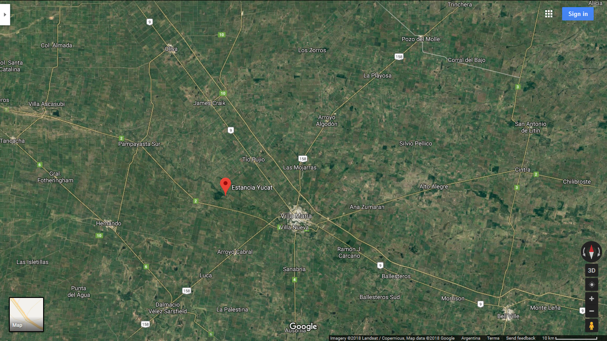

Sobre la complejidad de la restauración y la restauración de la complejidad


Esquema
- La importancia del bosque nativo
- Ecología de la restauración y sistemas complejos
- Aprendiendo a restaurar
- Comentarios finales
La importancia del bosque nativo
- Regulación de diversos factores:
- Suelo, agua, aire
- Clima
- Biodiversidad
- Sustentabilidad
- Mejora la calidad de vida
La situación en Córdoba es crítica
Approximately 80% of the area that was originally undisturbed forest is now occupied by crops, pastures, and secondary scrub. The main proximate cause of deforestation has been agricultural expansion, soybean cultivation in particular. This appears as the result of the synergistic convergence of climatic, technological, and socioeconomic factors, supporting the hypothesis of a multiple-factor explanation for forest loss, while providing one of the very few existing analyses of changes in subtropical forests of the world.
Zak. et al (2008)
La conservación no alcanza
Ecologia de la restauración
Ecología de la restauración
La ecología de la restauración es una disciplina joven, cuyo enfoque esta en encontrar la manera optima de recomponer un ecosistema dañado, en general por la intervención humana.
Ecología de la restauración
There is no question that restoration ecology is the wave of the future and that the papers included in this volume will provide an important basis for those involved in restoring biodiversity to ecosystems and aiding in restoring planetary sustainability.
Niering, 1997, p. 273
Ecología de la restauración
Ecological restoration will continue to provide important insights into the way that ecological communities are assembled and ecosystems function.
Dobson, 1997, p. 521
El bosque como sistema adaptativo complejo
Filotas et al. (2014):
- Heterogeneidad
- Jerarquía
- Auto-organización
- Propiedades emergentes
- Memoria
Restaurando la complejidad
Esfuerzos del CERNAR
- Sierras grandes
- Sierras chicas
- Pampa húmeda
Estancia de Yucat
¿Como restaurar?
- ¿Por donde empiezo?
- ¿Hasta donde intervengo?
- ¿Con quienes?
Comentarios finales
- Articuladora
- Gran diversidad de actores
- Bucles
¡Muchas gracias!
✉ julianreynoso@unc.edu.ar
✉ cecilia.estrabou@unc.edu.ar
Presentación: http://errejulian.github.io/complex
Referencias
Dobson, A. P. (1997). Hopes for the future: restoration ecology and conservation biology. Science, 277(5325), 515–522.
Filotas, E., Parrott, L., Burton, P. J., Chazdon, R. L., Coates, K. D., Coll, L., … Messier, C. (2014). Viewing forests through the lens of complex systems science. Ecosphere, 5(1).
Niering, William A. (1997). Human-Dominated Ecosystems and the Role of Restoration Ecology. Restoration Ecology 5 (4):273–74.
Zak, M. R., Cabido, M., Cáceres, D., & Díaz, S. (2008). What drives accelerated land cover change in central Argentina? Synergistic consequences of climatic, socioeconomic, and technological factors. Environmental Management, 42(2), 181–189.